광학기사 (2013-08-18 기출문제)
1과목: 기하광학 및 광학기기
1. 만약 초점거리가 50mm인 카메라 렌즈가 f/8로 조정되어 있고 15cm 떨어진 물체에 초점을 맞춘다면 이 때 유효 f-수는 얼마인가?
- 5
- 8
- 12
- 24
(정답률: 64%)

2. 바늘구멍 사진기 앞 2m 거리에 크기가 15cm의 물체가 놓여 있다. 바늘구멍으로부터 스크린까지의 거리가 40cm일 때 스크린에 맺힌 상의 크기는 얼마인가?
- 1cm
- 2cm
- 3cm
- 5cm
(정답률: 64%)
3. 투명한 물체의 굴절률을 실험적으로 측정하기 위해서 그 물체를 삼각형의 얇은 프리즘 모양으로 만들어서 이용 한다. 프리즘을 통과한 단색의 광선이 최소편기(이)가 일어나는 상태가 되도록 조절한다. 이 때 프리즘의 굴절률을 구하기 위해서 측정해야 할 것은?
- 입사각, 정각
- 최소편기(이)각, 정각
- 입사각, 굴절각
- 최소편기(이)각, 입사각
(정답률: 80%)
4. 핀을 카메라의 왼쪽에 물체가 놓여 있고 이 물체로부터 오른쪽으로 3m 떨어진 곳에 물체 크기의 1/5이 되는 상이 맺혔다. 핀홀과 상까지의 거리는 얼마인가?
- 15cm
- 30cm
- 50cm
- 60cm
(정답률: 알수없음)
5. 빛의 측정 단위를 잘못 표시한 것은?
- 빛 에너지의 단위는 J이다.
- 광도는 광원의 밝기 정도를 나타내며 단위는 칸델라(cd)이다.
- 조도는 측정면에서의 밝기의 정도를 나타내며 단위는 루멘(lumen)이다.
- 빛의 출력은 광원에서 나오는 광속을 의미하며 단위는 와트(W)이다.
(정답률: 알수없음)
6. 어떤 표적무늬의 선명도(변조도)가 60%이고, 이때 표적 무늬의 가장 밝은 부분이 임의 단위로 20이었다면, 무늬의 가장 어두운 부분은 임의 단위로 얼마인가?
- 5단위
- 10단위
- 15단위
- 20단위
(정답률: 54%)
7. 유효초점거리 100mm, 입사동의 직경이 20mm인 무수차 원형개구 광학계로 무한대에 있는 물체를 결상하였다. 빛의 파장이 0.5㎛일 때, 이 광학계가 분해할 수 있는 최대 공간주파수(cutoff frequency)는 몇 cycles/mm인가?
- 200cycles/mm
- 400cycles/mm
- 500cycle/mm
- 1000cycles/mm
(정답률: 64%)
8. 꼭지각이 30°인 프리즘의 굴절률은 파란색 광선에 대해선 1.65이고, 빨간색 광선에 대해선 1.61이라면 두 파장 범위 내에서 각 분산(angular dispersion)은?
- 1.31°
- 2.62°
- 3.38°
- 4.18°
(정답률: 59%)
9. 두꺼운 렌즈의 절점(nadal point)에 대한 설명으로 옳은 것은?
- 촛점을 특별하게 표현한 용어이다.
- 주요점(principal point)과 동일한 점이다.
- 파노라마 카메라로 절점을 결정할 수 있다.
- 주축상의 각배율이 1이 되는 한쌍의 공액점이다.
(정답률: 60%)
10. 눈으로 입사하는 평행한 광선이 망막에 초점을 맺었다. 수정체와 망막 사이의 거리가 20mm라 하면 수정체의 굴절능은 몇 D(디옵터)인가? (단, 수정체의 굴절률은 1.33으로 한다.)
- 20.5D
- 45.5D
- 66.5D
- 75.5D
(정답률: 62%)
11. 굴절률 1.5인 물속 30cm 깊이에 동전이 놓여있다. 물 밖에 있는 관측자가 수면에 대해서 수직으로 보는 동전의 깊이는 실제 깊이와 얼마나 차이가 있는가?
- 40cm
- 30cm
- 20cm
- 10cm
(정답률: 67%)
12. 스톱(Stop)에 대한 설명 중 틀린 것은?
- 스톱의 직경이 작아지면 초점심도는 커진다.
- f-number가 작아지면 초점심도는 작아진다.
- field stop이 작아지면 노출량이 작아진다.
- 입사동과 출사동은 1:1 대응관계이다.
(정답률: 37%)
13. 코어의 굴절률이 1.62, 크래딩의 굴절률이 1.52인 계단형 광섬유의 개구수(numerical aperture)는 약 얼마인가?
- 0.26
- 0.36
- 0.56
- 0.96
(정답률: 알수없음)
14. 어떤 오목거울의 앞 60cm의 위치에 물체를 놓았더니 물체 크기의 5배 되는 실상이 생겼다. 이 오목거울의 초점거리의 크기는 얼마인가?
- 30cm
- 40cm
- 50cm
- 60cm
(정답률: 82%)
15. 다음 대안렌즈 중 시야조리개(Field Stop)의 위치가 서로 다른 한가지는 무엇인가?
- Huygens eyepiece
- Ramsden eyepiece
- Kellner eyepiece
- Orthoscopic eyepiece
(정답률: 57%)
16. 색수차가 발생하는 원인은 빛의 어떤 성질 때문인가?
- 반사
- 분산
- 간섭
- 편광
(정답률: 77%)
17. 원점거리가 50cm인 사람이 써야할 안경의 종류와 안경의 도수(diopter)는?
- 0.5diopter, 볼록렌즈
- 0.5diopter, 오목렌즈
- 2diopter, 볼록렌즈
- 2diopter, 오목렌즈
(정답률: 알수없음)
18. 진공 중에서 파장이 560nm인 빛이 굴절률이 1.4인 매질을 통과할 때 이 매질 내에서의 파장은 얼마인가?
- 400nm
- 450nm
- 684nm
- 784nm
(정답률: 80%)
19. 곡률반경이 100mm인 포물면에서 x=y=5mm일 때, 광측(z)에 수직하고 포물면의 정점에 원점을 준 평면으로부터 계산된 z값(SAG)은?
- 0.25mm
- 0.5mm
- 0.75mm
- 1.0mm
(정답률: 34%)
20. 경통길이(tube length)가 160mm인 현미경에서 초점 거리가 20mm인 대물렌즈의 배율의 크기는 얼마인가?
- 4
- 8
- 20
- 40
(정답률: 84%)
2과목: 파동광학
21. 방해석에서 광축에 수직인 방향으로 진행하는 빛에 대한 설명으로 옳은 것은?
- 이상광선과 정상광선의 구별이 없다.
- 이상광선이 정상광선보다 느리게 진행한다.
- 이상광선이 정상광선보다 빠르게 진행한다.
- 이상광선과 정상광선이 같은 속도로 진행한다.
(정답률: 73%)
22. 똑같은 두 개의 점광원을 렌즈로 결상할 때, 한 점광원의 회절상에서 첫 번쨰 어두운 무늬 위에 다른 점광원의 회절상에서 제일 밝은 부분이 있으며 두 점광원은 분해되었다고 할 수 있는데 이 같은 분해의 기준이 되는 것은?
- 에어리 디스크
- 테일러 기준
- 레일리 기준
- 프레넬 회절
(정답률: 46%)
23. 초점거리 20cm인 블록렌즈의 한 초평면상에 폭 1㎛의 슬리트를 위치시킨 후, 500nm 파장의 광을 슬리트에 수직으로 조사시켜 렌즈의 반대편 초평면 상에 나타나는 회절무늬를 관찰한다. 1차 어두운 회절무늬의 위치ㅣ는 무늬의 중심에서 얼마의 거리에 있는가?
- 1cm
- 5cm
- 10cm
- 20cm
(정답률: 47%)
24. 굴절률 타원체 방정식이 0.3x2+0.3y2+0.4z2=1로 표현되는 광학 매질에서 z축 방향으로 진행하는 광에 대한 굴절률은 얼마인가?
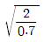
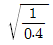
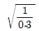
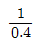
(정답률: 77%)
25. 굴절률 1.0인 공기 중에 굴절율 1.34인 비눗물로 막을 만들었다. 이 막에 수직으로 파장 633nm인 빛을 비추니 아주 강하게 반사되었다. 이 비눗물막의 두께는 약 얼마인가?
- 633nm
- 316nm
- 158nm
- 118nm
(정답률: 50%)
26. 나드륨등에서 나오는 노란빛은 5890Å과 5896Å의 두 파장으로 되어 있다. 이 빛의 스펙트럼을 회절격자를 사용하여 분해하여 보려고 한다면, 어떤 빛을 사용하여야 하는가? (단, 나트륨등의 기체압력과 온도에 의한 선폭 확대는 무시한다.)
- 격자선 밀도 10lines/mm인 5cm×5cm 회절격자에서 1차 회절된 빛을 사용한다.
- 격자선 밀도 15lines/mm인 5cm×5cm 회절격자에서 1차 회절된 빛을 사용한다.
- 격자선 밀도 5lines/mm인 5cm×5cm 회절격자에서 2차 회절된 빛을 사용한다.
- 격자선 밀도 20lines/mm인 5cm×5cm 회절격자에서 2차 회절된 빛을 사용한다.
(정답률: 70%)
27. 다음 중 진폭분리형 간설계가 아닌 것은?
- 마이켈슨 간섭계
- 패브리-페롯 간섭계
- 영의 이중슬릿 간섭계
- 층밀리기 간섭계(shearing interferometer)
(정답률: 알수없음)
28. 소디움(sodium) 이중선(λ1=5895.9Å, λ2=5890.0Å)을 삼차회절광에서 분리시키기 위하여서는 격자의 총 격자선이 몇 줄이어야 되는가?
- 333
- 500
- 999
- 1964
(정답률: 알수없음)
29. 직경이 0.1mm인 원형구멍에 파장이 633nm인 He-Ne레이저광을 비추었을 때, 이 원형구멍으로부터 10cm떨어져있는 스크린 상에 만들어지는 에어리(Airy)원판의 크기는?
- 0.4mm
- 0.6mm
- 0.8mm
- 1.0mm
(정답률: 34%)
30. 두 개의 롱치 격자(ronchi rulings)를 겹치면 무아레 무늬를 관찰할 수 있다. 이 무늬에 대한 설명으로 틀린 것은?
- 백색광에서도 무늬를 볼 수 있다.
- 격자면의 변형을 측정할 수 있다.
- 유리의 공간적 굴절률 변화율을 알 수 있다.
- 격자를 회전시키면 무늬 간격이 변화한다.
(정답률: 47%)
31. 음향광학 변조기는 투명한 결정이나 유리로 된 물질의 한 끝에 압전소자를 부착하여 초음파를 발생시켜 입력광을 변조시킨다. 투명 매질 내 초음파에 의해 입력광에서 일어나는 광학적 현상은?
- 회절
- 간섭
- 광산란
- 편광 방향의 변화
(정답률: 84%)
32. 다음 맥스웰(Maxwell) 방정식 중패러데이(Faraday)법칙과 관련된 것은?
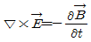
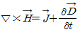
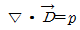
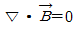
(정답률: 73%)
33. 광통신에 주로 사용되는 C-band의 파장 영역은?
- 800~900nm
- 1260~1360nm
- 1365~1525nm
- 1530~1562nm
(정답률: 82%)
34. 다음 중 홀로그래피를 기록할 때 이용되는 광원으로 사용되지 않는 것은?
- LED
- 아르곤 레이저
- 헬륨-네온 레이저
- 헬륨-카드뮴 레이저
(정답률: 77%)
35. 1mm당 200개의 간극(groove)을 가진 회절격자에 수직으로 0.5㎛ 파장의 광파가 입사하였다. 2차 주국대 회절무늬가 형성되는 지점은 입사파의 방향에서 몇 도 기울어진 곳인가?
- 0.01rad
- 0.2rad
- 0.4rad
- 0.6rad
(정답률: 40%)
36. 그림과 같은 그물필터(mesh filter)를 fourier transform렌즈를 써서 초점면에 상을 만들었다. 상의 모양은?
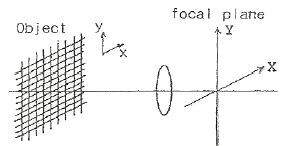
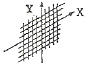
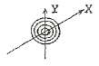
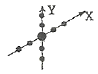
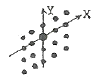
(정답률: 50%)
37. 가우스(Gauss) 함수를 푸리에(Fourier) 변환하면 어느 함수가 되는가?
- 델타(delta) 함수
- 싱크(sinc) 함수
- 베셀(Bessel) 함수
- 가우스(Gauss) 함수
(정답률: 80%)
38. 공기 중에 굴절률이 1.5인 투명박막이 있다. 여기에 600nm의 빛이 수직 입사한다. 박막에서 반사되는 빛이 최소가 되기 위한 박막의 최소 두께는 몇 nm인가?
- 100
- 150
- 200
- 400
(정답률: 알수없음)
39. 얇은 렌즈의 곡률반경이 R이고, 이 렌즈와 평판사이의 굴절률이 n인 뉴톤링 실험장치가 있다. 반사광에 의한 뉴톤링 무늬에서 첫 번째 어두운 무늬의 반경은 얼마인가? (단, 사용된 파장은 λ이다.)
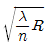
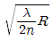
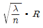
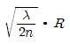
(정답률: 알수없음)
40. 수직입사할 때 λ=500nm의 빛을 적당한 광학적 두께를 갖는 특정 박막에 비출 경우 이 박막의 광학적 특성이 마치 박막이 없을 때와 같게 된다면 이 박막층을 부재층(absentee layer)이라 부르며, 이 파장에서는 반사율 계산에 영향을 미치지 않는다. 이 파장에 대한 부재층의 광학적 두께는 얼마인가?
- 125nm
- 250nm
- 375nm
- 500nm
(정답률: 54%)
3과목: 광학계측과 광학평가
41. 촛점거리가 40cm인 볼록렌즈와 오목렌즈를 차례로 20cm 띄어서 배열한 복합렌즈가 있다. 각 렌즈는 얇은 렌즈로 생각하여 미 렌즈의 전초점거리(f.f.l)와 후초점거리 (b.f.l)는 각각 몇 cm인가?
- f.f.l = 80cm, b.f.l = 80cm
- f.f.l = 40cm, b.f.l = 120cm
- f.f.l = 120cm, b.f.l = 40cm
- f.f.l = 120cm, b.f.l = 120cm
(정답률: 34%)
42. 샘지움(색수차가 소거된) 렌즈에 대한 설명으로 틀린 것은?
- 색지움 이중렌즈는 볼록 크라운렌즈를 전면으로 하고, 오목 프린트 렌즈를 후면으로 하여 결합시켜 만든다.
- C선(H-6562Å)과 F선(H-4861Å) 및 d(He-5876Å)선에 대한 색지움 렌즈는 3개의 렌즈로 구성한다.
- 색지움 렌즈의 설계시 주로 참고되는 프라운호퍼선으로는 C선과 F선 및 d선이 있다.
- 색지움 이중렌즈를 통과한 빛은 파장에 상관없이 공통 초점을 가진다.
(정답률: 70%)
43. 파장이 5555Å인 광원을 쓰고, 개구수(N.A.)가 0.55인 대물렌즈를 사용한 경우 현미경의 분해한계는?
- 0.62mm
- 0.062mm
- 0.0062mm
- 0.00062mm
(정답률: 50%)
44. 각면의 곡률 반경이 R1, R2인 양볼록렌즈가 있다. 렌즈의 굴절을 Nℓ, 중심 두께 d, 직경 D라 할 때, 얇은 렌즈에 해당하는 렌즈 제작자의 공식(Lens maker’s formula)에 포함되는 상수들로만 묶은 것은? (단, So와 Si는 물체거리와 상거리를 나타낸다.)
- R1, R2, nℓ, d, D
- R1, R2, nℓ, D
- nℓ, D, d
- R1, R2, nℓ
(정답률: 59%)
45. 정각(꼭지각)이 α이고, 최소편의각이 δm인 분산 프리즘의 굴절률은?
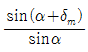
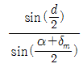
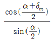
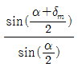
(정답률: 47%)
46. 다음 광학재료 중에서 적외선 영역에서 굴절계에 많이 사용되는 재료가 아닌 것은?
- Pyrex
- ZnS(Sinc sulfide)
- ZnSe(Zinc selenide)
- CdTe(Cadmium telluride)
(정답률: 46%)
47. 다음 광학재료 중 자외선 영역에서 흡수가 가장 적은 재료는?
- 천연수정
- 플린트유리
- 크라운유리
- 플렉시글래스(Plexiglass)
(정답률: 30%)
48. 카메라의 렌즈에는 우반사 코팅을 하여 피사체로부터 오는 빛의 반사를 막는다. 렌즈의 굴절률을 1.5, 코팅 재료의 굴절률을 1.3이라 하고, 가시광선을 1.5, 코팅 재료의 굴절률을 1.3이라 하고, 가시광선의 중간 파장인 550nm에 대해 수직입사 시 무반사 코팅을 하고자 하면 코팅 막의 최소 두께는 얼마인가?
- 92mm
- 106mm
- 184mm
- 212mm
(정답률: 60%)
49. 좋은 광학유리의 특징으로 옳지 않은 것은?
- 열팽창계수 값이 높아야 한다.
- 아베수와 굴절률이 커야 한다.
- 색분산률이 작아야 한다.
- 내화학성이 좋아야 한다.
(정답률: 59%)
50. 입사각 ø1, 굴절각 ø2, 입사 매질의 굴절율은 n1, 굴절 매질의 굴절율은 n2이라 할 때
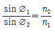
의 관계가 성립되는 법칙을 무엇이라 하는가?- 스넬의 법칙
- 뉴턴의 법칙
- 페르마의 법칙
- 브루스터의 편광법칙
(정답률: 알수없음)
51. 카메라와 현미경의 상에 관한 설명이 옳은 것은?
- 카메라는 실물보다 작은 도립실상이, 현미경에는 실물보다 큰 도립허상이 맺힌다.
- 카메라는 실물보다 작은 정립허상이, 현미경에는 실물보다 큰 도립실상이 맺힌다.
- 카메라는 실물보다 작은 정립실상이, 현미경에는 실물보다 큰 정립허상이 맺힌다.
- 카메라는 실물보다 큰 도립실상이, 현미경에는 실물보다 작은 정립허상이 맺힌다.
(정답률: 70%)
52. 다음 방법들 중 초점거리를 구하는 방법이 아닌 것은?
- 시준타겟 배율법
- 아베법(Abbe’s method)
- 푸코 시험법(Foucault test)
- 자동시준법(autocollimation method)
(정답률: 72%)
53. 다음의 광학유리 중에서 SiO2가 주성분이 아닌 것은?
- 크라운계 유리
- 바리움계 유리
- 힉토류계 유리
- 용융수정계 유리
(정답률: 60%)
54. 다음 중 일반렌즈용 광학재료가 갖추어야 할 조건이 아닌 것은?
- 무색 투명해야 한다.
- 기계적인 가공성이 좋아야 한다.
- 광학적으로 균질성이 있어야 한다.
- 광학적으로 이방성이 있어야 한다.
(정답률: 55%)
55. 전체 홈(groove)의 수가 N인 회절격자에 의해 m 차로 회절되는 빛에 대한 회절격자의 분해능 R은?
- mㆍN
- m/N
- N/m
- mㆍlogN
(정답률: 74%)
56. 쌍안경에 7×50 이라는 숫자가 쓰여 있고, 이 쌍안경의 대물렌즈의 초점 거리는 140mm, 대안렌즈(필드렌즈)의 직경은 14mm라면 대안렌즈의 초점거리는 얼마인가?
- 13mm
- 20mm
- 33mm
- 40mm
(정답률: 82%)
57. 일반적으로 사진기 렌즈 표면에는 MgF2의 얇은 박막을 입혀 렌즈 표면에서 일어나는 반사를 되도록 막고 있다. 이것은 다음 중 광선의 어떤 성질을 이용한 것인가?
- 간섭
- 산란
- 희절
- 편광
(정답률: 알수없음)
58. 그림과 같이 두 개의 평면 거울이 30°의 각을 이룰 때 물체 P의 허상의 수는?
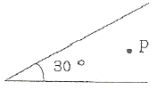
- 10개
- 11개
- 12개
- 13개
(정답률: 70%)
59. 화각이 큰 카메라 렌즈계에서 상의 중심부와 주변부간의 복사조도(irradiance)의 비례관계로 적절한 것은? (단, 물체에서 본 중심과 주변부 사이의 각도를 θ로 한다.)
- cosθ
- cos2θ
- cos4θ
- cos6θ
(정답률: 70%)
60. 렌즈의 설계를 위해 참고하여야 할 광학유리의 물성과 무관한 것은?
- 접착성
- 굴절률
- 투과도
- 열팽창계수
(정답률: 알수없음)
4과목: 레이저 및 광전자
61. 결정구조 중 전기광학 특성인 포켈스 효과(Pockels effect)를 보이는 구조로 옳은 것은?
- 단축 결정구조를 제외한 전 결정구조
- 쌍축 결정구조를 제외한 전 결정구조
- 중심대칭이 없는 등방성 결정구조를 제외한 전 결정 구조
- 중심대칭이 없는 등방성(isotropic), 단축(uniaxial) 및 쌍축(biaxial) 결정 전부
(정답률: 67%)
62. 다음의 레이저 중 Ti:sapphire 레이저의 여기광원으로 사용할 수 없는 것은?
- Dye 레이저
- Co2 레이저
- 구리증기레이저
- Nd : YAG 레이저의 제 2고주파
(정답률: 73%)
63. 다음 중 광변조기로 사용할 수 없는 것은?
- 초퍼
- 샷타
- 맥정
- 광증배관
(정답률: 77%)
64. KDP 결정의 경우 전기광학상수 r63=10.6×10-12m/V, 정상광선의 굴절률 no=1.51, 진공 중의 파장 λ0=632.8nm일 때 반파장전압 Vλ/2은 대략 얼마인가?
- 1.98×104V
- 1.98×103V
- 8.67×103V
- 8.67×102V
(정답률: 42%)
65. 편광을 얻을 수 있는 방법을 설명한 것 중 틀린 것은?
- 마찰을 이용한다.
- 복굴절을 이용한다.
- 산란을 이용한다.
- 반사를 이용한다.
(정답률: 알수없음)
66. 다음 중 유기발광다이오드(OLED)의 장점이 아닌 것은?
- 화면에 잔상이 남지 않는다.
- 낮은 전압에서 구동이 가능하다.
- 수명이 다른 디스플레이 소자보다 길다.
- 넓은 시야각과 빠른 응답속도를 갖는다.
(정답률: 28%)
67. Cotton-Mouton 효과를 이용하여 광 변조기를 제작하려한다. 이 때 Cotton-Mouton 효과는 외부에서 걸어준 무엇에 비례 하는가?
- 전장의 곱에 비례한다.
- 전장의 제곱에 비례한다.
- 자기장의 곱에 비례한다.
- 자기장의 제곱에 비례한다.
(정답률: 알수없음)
68. 광섬유 통신에서 레이저 광원으로부터 나온 신호펄스는 광섬유를 진행함에 따라 펄스의 폭이 넓어져 정보 전송률에 영향을 미치게 된다. 단일모드 광섬유를 사용하는 경우에 줄일 수 있는 가장 주요한 분산 성분은 무엇인가?
- 재료 분석
- 펄스 분산
- 모드 분산(찌그러짐)
- 색 분산
(정답률: 47%)
69. 다음 광학유리에 관한 설명 중 틀린 것은?
- 가시광 영역에서 짧은 파장일수록 굴절이 심하다.
- 유리의 분산도가 높으면 높을수록 아베수가 낮은 값을 가진다.
- 역분산도가 50혹 55보다 큰 아베수를 가지는 유리를 크라운 유리라 한다.
- 바륨 크라운 유리 번호가 611558로 명기 시 유리의 굴절률은 0.611이 된다.
(정답률: 알수없음)
70. 레이저 빛을 이용하여 Young의 간섭 실험을 수행하였다. 스크린상에 나타난 간섭무늬의 간격을 크게 하기 위한 조건으로 타당한 것은?
- 양슬릿의 간격을 넓힌다.
- 파장이 짧은 레이저를 사용한다.
- 슬릿과 스크린사이의 거리를 좁힌다.
- 주파수가 작은 레이저를 사용한다.
(정답률: 알수없음)
71. 파장 λ=500nm에서 파장선폭 △λ=0.1nm인 광원이 있다. 결맞음 길이 (coherence length)를 계산하면?
- 0.1mm
- 0.25mm
- 2.5mm
- 10.0mm
(정답률: 37%)
72. 다음 중 주된 발진선의 파장이 자외선 영역에 해당되는 레이저는?
- Ruby 레이저
- ArF 레이저
- Nd-YAG 레이저
- 이산화탄소 레이저
(정답률: 50%)
73. 굴절율 √3을 갖는 유리를 사용하여 선형 편광된 레이저 빛을 발진시키고자 한다. 빛이 유리에서 공기로 나갈 때 Brewster 각도는?
- 20°
- 30°
- 45°
- 60°
(정답률: 28%)
74. 다음 레이저 중 파장이 5145Å인 빛을 발진할 수 있는 레이저는?
- 아르곤 레이저
- 헬륨 네온 레이저
- 질소 레이저
- 구리증기 레이저
(정답률: 59%)
75. 발진파장 1.064㎛를 갖는 Nd:YAG 레이저는 몇 준위 레이저인가?
- 1준위 레이저
- 2준위 레이저
- 3준위 레이저
- 4준위 레이저
(정답률: 50%)
76. 복굴절결정 내에서 빛이 진행할 때 복굴절 결정의 주요단면(principal section)에 수직인 전기장 벡터를 갖는 광선을 무슨 광선이라 하는가?
- 정상 광선
- 이상광선
- s-광선
- p-광선
(정답률: 알수없음)
77. KDP 결정을 이용하여 빛의 복사조도(세기)를 변조할 수 있는데 이는 KDP 결정의 어떠한 성질을 이용하는 것인가?
- 광학적 Kerr효과
- 전기광학(Electro-potic) 효과
- 광음향(Electro-acoustic) 효과
- 선형 광학(linear optic) 효과
(정답률: 57%)
78. 단색광의 두 파를 중첩하여 간섭무늬를 얻으려 할 때 두 파의 복사조도 I1과 I2의 비가 얼마일 때 간섭무늬의 선명도(visibility)가 가장 높은가?
- 50:50
- 40:60
- 20:80
- 4:96
(정답률: 73%)
79. 평면 거울과 평면 부분 반사경으로 구성된 레이저 공진기의 길이가 1cm일 때, 이 공진기에서 발진된 레이저의 종모드 주파수로 맞는 것은? (단, 공진기 내부는 진공이다.)
- 10GHz
- 15GHz
- 20GHz
- 25GHz
(정답률: 67%)
80. 다음 중 복굴절이 일어나는 이유로 가장 적절한 것은?
- 결정의 굴절률이 빛의 편광 방향에 따라 다르기 때문
- 결정의 한방향이 snell의 굴절 법칙에 어긋나기 때문
- 결정에 의하여 빛이 편광 방향이 회전하기 때문
- 결정의 굴절률이 빛의 파장에 따라 변하기 때문
(정답률: 알수없음)